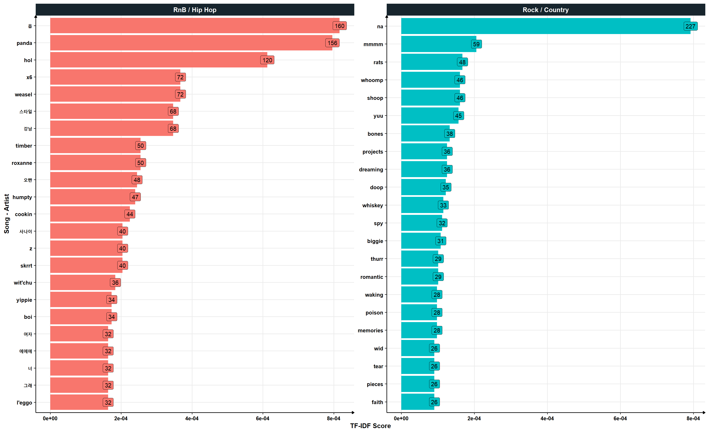

library(tidyverse)
library(tidytext)
library(hrbrthemes)TF-IDF Analysis
lyr_df <- read_csv('../data/lyr_df.csv') |>
mutate(genre = if_else(hip_hop_rnb == 0,
'Rock / Country',
'RnB / Hip Hop'))
lyr_df# A tibble: 719 × 5
song artist hip_hop_rnb lyrics genre
<chr> <chr> <dbl> <chr> <chr>
1 Beautiful Crazy Luke Combs 0 "Her day starts … Rock…
2 Best Shot Jimmie Allen 0 "I'm just flesh … Rock…
3 Blue Tacoma Russell Dickerson 0 "Blue Tacoma, Ca… Rock…
4 Broken Halos Chris Stapleton 0 "Seen my share o… Rock…
5 Even Though I'm Leaving Luke Combs 0 "Daddy, I'm afra… Rock…
6 Every Little Thing Russell Dickerson 0 "Who! Huh, yeah … Rock…
7 Eyes on You Chase Rice 0 "We've been to b… Rock…
8 For the First Time Darius Rucker 0 "You say you nev… Rock…
9 Get Along Kenny Chesney 0 "Met a man weari… Rock…
10 Girl Maren Morris 0 "Man, this shit'… Rock…
# … with 709 more rows
# ℹ Use `print(n = ...)` to see more rowssong_words <- lyr_df |>
drop_na(hip_hop_rnb) |>
unnest_tokens(word, lyrics)|>
add_count(song, artist, name = "total_words") |>
anti_join(stop_words) |>
group_by(song, artist, hip_hop_rnb, genre, total_words) |>
count(word, sort = TRUE) |>
ungroup()
song_words# A tibble: 25,273 × 7
song artist hip_ho…¹ genre total…² word n
<chr> <chr> <dbl> <chr> <int> <chr> <int>
1 I Love Your Smile Shanice 1 RnB … 549 doo 253
2 Baby Brandy 1 RnB … 600 yeah 196
3 See You Again Wiz Khalifa 1 RnB … 1076 ooh 114
4 Say My Name Destiny's Child 1 RnB … 976 yeah 110
5 Boom Boom Pow The Black Eyed Peas 1 RnB … 567 boom 109
6 Giving You the Benefit Pebbles 1 RnB … 924 givi… 104
7 Nothin' on You B.o.B 1 RnB … 1502 na 104
8 My Body LSG 1 RnB … 564 body 102
9 Nothin' on You B.o.B 1 RnB … 1502 noth… 90
10 Baby Brandy 1 RnB … 600 baby 86
# … with 25,263 more rows, and abbreviated variable names ¹hip_hop_rnb,
# ²total_words
# ℹ Use `print(n = ...)` to see more rowssong_words_tf_idf <- song_words |>
select(-total_words) |>
mutate(song_artist = glue::glue('{song} - {artist}')) |>
bind_tf_idf(term = word, document = song_artist, n = n)
song_words_tf_idf |> write_csv('../data/song_words_tf_idf.csv')
song_words_tf_idf |>
arrange(desc(tf_idf)) # A tibble: 25,273 × 10
song artist hip_h…¹ genre word n song_…² tf idf tf_idf
<chr> <chr> <dbl> <chr> <chr> <int> <glue> <dbl> <dbl> <dbl>
1 I Love Your Smile Shani… 1 RnB … doo 253 I Love… 0.707 4.81 3.40
2 Rats Ghost 0 Rock… rats 47 Rats -… 0.452 5.50 2.49
3 Bulletproof Godsm… 0 Rock… bull… 24 Bullet… 0.471 5.10 2.40
4 What I've Done Linki… 0 Rock… na 40 What I… 0.597 4.00 2.39
5 Can't Be Friends Trey … 1 RnB … la 48 Can't … 0.453 4.11 1.86
6 Boom Boom Pow The B… 1 RnB … boom 109 Boom B… 0.382 4.81 1.84
7 Exhale (Shoop Sh… Whitn… 1 RnB … shoop 46 Exhale… 0.295 6.19 1.83
8 Devil Shine… 0 Rock… heavy 51 Devil … 0.378 4.40 1.66
9 Bones Young… 0 Rock… bones 26 Bones … 0.4 4.00 1.60
10 She Hates Me Puddl… 0 Rock… la 45 She Ha… 0.36 4.11 1.48
# … with 25,263 more rows, and abbreviated variable names ¹hip_hop_rnb,
# ²song_artist
# ℹ Use `print(n = ...)` to see more rowssong_words_tf_idf |>
arrange(desc(tf_idf)) |>
head(25) |>
ggplot(aes(x = tf_idf,
y = reorder(song_artist, tf_idf),
label = word,
fill = genre)) +
geom_col() +
geom_label() +
theme_minimal()+
ylab('Song - Artist') +
xlab('TF-IDF Score')+
theme_ipsum_ps()genre_words <- lyr_df |>
drop_na(hip_hop_rnb) |>
unnest_tokens(word, lyrics)|>
add_count(hip_hop_rnb, name = "total_words") |>
# anti_join(stop_words) |>
group_by(hip_hop_rnb, total_words) |>
count(word, sort = TRUE) |>
ungroup()
genre_words# A tibble: 9,170 × 4
hip_hop_rnb total_words word n
<dbl> <int> <chr> <int>
1 1 130542 you 6456
2 1 130542 i 5297
3 1 130542 the 3454
4 1 130542 me 2913
5 1 130542 to 2587
6 0 67954 the 2546
7 1 130542 and 2486
8 1 130542 it 2447
9 0 67954 i 2375
10 0 67954 you 2371
# … with 9,160 more rows
# ℹ Use `print(n = ...)` to see more rowsgenre_words_tf_idf <- genre_words |>
select(-total_words) |>
mutate(genre = if_else(hip_hop_rnb == 0,
'Rock / Country',
'RnB / Hip Hop')) |>
bind_tf_idf(term = word, document = genre, n = n)
genre_words_tf_idf |> write_csv('../data/genre_words_tf_idf.csv')
cen_genre_words_tf_idf <- genre_words_tf_idf |>
mutate(word = word |> str_replace('nigga', 'n****'))
genre_words_tf_idf |>
arrange(desc(tf_idf)) # A tibble: 9,170 × 7
hip_hop_rnb word n genre tf idf tf_idf
<dbl> <chr> <int> <chr> <dbl> <dbl> <dbl>
1 1 doo 285 RnB / Hip Hop 0.00218 0.693 0.00151
2 1 nigga 123 RnB / Hip Hop 0.000942 0.693 0.000653
3 1 y 117 RnB / Hip Hop 0.000896 0.693 0.000621
4 1 boom 113 RnB / Hip Hop 0.000866 0.693 0.000600
5 1 niggas 106 RnB / Hip Hop 0.000812 0.693 0.000563
6 1 ha 94 RnB / Hip Hop 0.000720 0.693 0.000499
7 0 rats 48 Rock / Country 0.000706 0.693 0.000490
8 1 g 92 RnB / Hip Hop 0.000705 0.693 0.000488
9 1 yo 90 RnB / Hip Hop 0.000689 0.693 0.000478
10 0 bones 38 Rock / Country 0.000559 0.693 0.000388
# … with 9,160 more rows
# ℹ Use `print(n = ...)` to see more rowscen_genre_words_tf_idf |>
arrange(desc(tf_idf))|>
group_by(genre) |>
slice_max(tf_idf, n = 20) |>
ungroup() |>
ggplot(aes(x = tf_idf,
y = reorder(word, tf_idf),
label = n,
fill = genre)) +
geom_col() +
geom_label() +
scale_fill_discrete() +
facet_wrap(~genre, scales = 'free')+
ylab('Song - Artist') +
xlab('TF-IDF Score')+
theme_ipsum_ps() +
theme(legend.position = 'none')